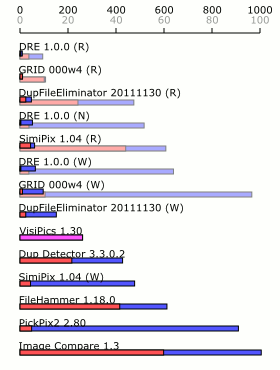
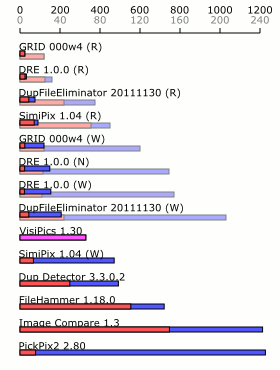
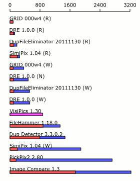
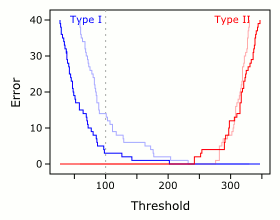
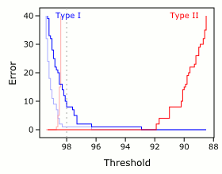
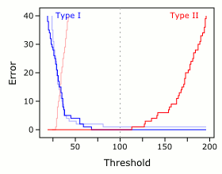
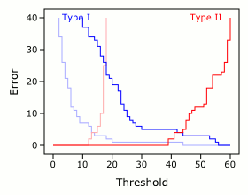

類似画像検出ソフト DRE
DREは、あなたのコンピュータに保存されている画像の中から、とくに類似しているものを重複として検出し、処分するソフトウェアです。
DREの名前は、「そっくりさん消し」の意味の英語Dead Ringer Eraserから取られました。
ソフトウェア、およびソースコードは、sourceforge.netから利用できます。
右側の「ダウンロード」リンクからアクセスしてください。
特徴
ウィザードスタイルで、ステップに分けて段階的に操作を行います。
類似画像検出のアルゴリズムは、複数の種類から選択できます。パッケージとして外部からの追加も可能です。
しきい値、キャッシュの使用、マルチスレッドなど、さまざまなオプションが選択可能です。
検出した重複画像は半自動で1枚に絞り込まれ、その他の不要になったファイルは移動または削除することができます。
複数の言語に対応しています。 （現在は日本語・英語のみ）
コマンドラインからの使用も可能です。
ライセンス
DREアプリケーション （dre.app.*.jar） のライセンスは、GPL v3 です――
すなわち、アプリケーションの自由な改変や再頒布が認められていますが、
このアプリケーションの一部または全部を使用したソフトウェアは、GPL v3に従う必要があります。
一方、DREコアライブラリ （dre.core.jar） 、および付属のプラグインパッケージは、LGPL v3 に従います。
したがって、これらのライブラリを変更することなく使用する場合に限り、新たなライセンスによって頒布することができます。
GPL v3、LGPL v3のライセンス規定の全文は、次のリンクを参照してください。
GNU Lesser General Public License
lgpl.txt
付属外部ライブラリに関しては、それぞれのオリジナルのライセンスに従うものとします。
使い方のガイドライン
もしあなたが過去に他の類似画像判定ツールを使用したことがあるなら、いますぐにDREを立ち上げて、さまざまな機能を使うことができるでしょう。
そうでなければ、このガイドラインが役に立つはずです。
このページでは、実際の手順に合わせて、DREの使い方を解説します。
検出対象ファイルの選択
ソフトを起動すると、ファイルリスト画面が表示されます。
あなたが重複を調べたいと思っているファイルを、左側のリストに追加しましょう。
追加にはリストの項目をクリックしてもよいですし、あらかじめ開いておいたフォルダからドラッグアンドドロップで追加することもできます。
あるフォルダの中身すべてを比較したいですか？
それなら、そのフォルダごとリストにドラッグアンドドロップしましょう。
フォルダが追加されると、フォルダの中にあるファイルとサブフォルダの数が表示されます。
もしサブフォルダの中身まで検索にかけたいなら、項目の右にある「下層」にチェックを入れてください。
右側のリストは、二つのフォルダの間で比較したい場合に使います。
左のリストにフォルダＡ、右のリストにフォルダＢを追加した場合、ＡとＢにあるファイルの間で重複検索を行います――
Ａにあるファイルどうしの比較は行われません。
Ａにあるファイルだけで重複検索をしたいときには、「検出対象と同じファイルから探索する」にチェックを入れてください。
「次へ」ボタンを押すと、次の画面に移ります。
TIPS
右下の「パターン」ボックスを利用すると、検出対象となるファイルを正規表現によって絞り込むことができます。
リストに追加された項目を右クリックすると、コンテキストメニューが開き、項目の変更・削除ができます。項目の削除はDeleteキーでも行うことができます。
ドラッグアンドドロップは、左右のリスト間でも有効です。項目の入れ替えも可能です。
ふたつのリストの間のスペースをドラッグして、リストの幅を調整することができます。
これは、この画面以外にあるほとんどの画面分割部分でも有効です。
検出アルゴリズムの選択
検索を行うファイルを選んだら、次は検索の方法を選択します。
あなたがやろうとしている目的に合わせて、左側のリストの中からひとつ選んでください。
プリセットでは、類似画像検索を行うLoose Luminance Similarityパッケージ、ピクセル一致検索を行うPixel Duplicationパッケージ、
バイナリ一致検索を行うBinary Duplicationパッケージがインストールされています。
それぞれのパッケージには、検索を最適化するためのさまざまなオプション項目が用意されています。
パッケージを選んだら、右側のオプションテーブルの値をクリックして、あなた好みのオプション設定を行いましょう。
それぞれのオプションが何を意味しているのかは、このページの下の方に別記しています。
もしあなたのパソコンが最近のマルチコアCPUを使っているなら （最近？Core 2 Duoが出たのはもう5年も前だ！） 、「ワーカースレッド数」を増やすことで検索を高速化できます。
とくに類似画像検索は時間のかかる処理ですので、お使いのパソコンに合わせて設定することで無駄な時間をカットできます。
「次へ」ボタンを押すと、いよいよ検索が始まります。
TIPS
ワーカースレッド数を設定することで、CPUの負担を調整することができます。
検索中に他の作業を行いたい場合 （かつ、速度を気にしない場合） は、小さな値を設定することで、CPUの時間を他のアプリケーションに回せるようになります。
参考までに、最近のIntel CPUの最大並列数を挙げておきます: Core 2 Duo → 2、Core i3 / i5 → 4、Core i7 → 8。
「戻る」ボタンを押すと、ファイル選択画面に戻ることができます。 （そんなの知ってるって？失礼しました！）
類似判定の実行
とくに操作することはありません。
読み込みと比較処理が終了し、「次へ」ボタンが有効になるまで待ちましょう。
「戻る」を押すと、検出アルゴリズム選択の画面へ戻りますが、途中まで処理されたデータはすべて破棄されます。
TIPS
読み込み処理時間のほとんどは、画像ファイルへのディスクアクセスとデータの変換に費やされます。
パッケージオプションで「キャッシュを使用する」にチェックを入れると、一度読み込まれたデータが外部保存されて次回以降の読み込み時に利用されるため、
2回目以降の読み込み時間を大幅に減らすことができます。
処分するファイルの選択
もし類似画像をただ眺めて楽しみたいのでなければ、あなたは検出結果として返された重複ファイルをどうにかしたいと思うでしょう。
この画面では、ディスクの空きスペースを増やすために、どのファイルを処分するかを選択することができます。
ここで選ばれたファイルは、次の画面で削除またはフォルダ移動をさせることができます。
「類似ファイルの存在するファイル」リストは、最初の画面の「検出対象ファイル」に含まれていたファイルのうち、
類似する画像が見つかったものがリストアップされています。
リストの項目をクリックすると、「類似ファイルグループ」リストに、類似と判定されたファイルが表示されます。
リストの項目を順番にクリックして、プレビュー画面で確認してみましょう。
リストには、もとの画像に似ている順に候補が表示されます。
プレビュー画面が小さくて、画像の違いが分かりづらいですか？
それなら、ルーペ機能を使いましょう。
ルーペ機能は、プレビュー画面下の「ルーペ」チェックを入れることで有効になります。
プレビュー画面上にレンズ状に表示されるルーペは、ドラッグして移動させることもできますし、
半径や拡大率を指定することもできます。
類似ファイルグループの中で、これはいらないな、と思うものがあれば、その項目の左にあるチェックボックスにチェックを入れましょう。
ここでチェックされたファイルは、次の画面での削除/移動対象となります。
検出されたファイルが多すぎて手作業では大変なときには、一括チェック機能を使いましょう。
条件に合うファイルを自動的にチェックする一括チェック機能は、「一括チェック」タブから利用することができます。
TIPS
類似ファイルグループリストには、元画像の項目 （「類似ファイルの存在するファイル」リストで選択されている項目） も含まれています。
これによって、すべての類似画像間を上下キーだけで行き来することができます。
元画像の項目は常にリストの一番上に、距離0として表示されています。
ファイルリストにフォーカスがあるときにShiftキーを押すと、押している間だけ類似ファイルリストにフォーカスが移ります。
Shiftキーを押しながら上下キーで操作することで、キーボードのみでふたつのリストを行ったり来たりしながら、検出ファイルを総なめにすることができます。
チェックボックスのコントロールがスペースキーで行えることを考えれば、この画面での必要な操作はすべてキーボード上で行えることになります。
一括チェック機能を使って安全にファイルを処分するには、多少の慣れとカンが必要かもしれません。
たとえば、「すべてのグループのうち、最も大きいサイズの画像を残したい」場合には、まず「すべてのファイルにチェック」したあと、「画素数が最も大きいファイルのチェックを外」します
（なぜ単純に「画素数が最も大きいファイル以外にチェック」するのはいけないのでしょうか？考えてみてください！） 。
この直感的でない方法には改善の余地がありますが、この問題を解決するのはかなり難しいので、現状のままとしています。
処分方法の選択
処分したいファイルを決めたら、次にそれらの処分方法を決めましょう。
処分の方法としては、ファイルを削除するか、どこか別のフォルダに移動させるか、のふたつがあります。
別のフォルダに移動させる場合には、移動先のパスを指定してください。
「次へ」を押して処分が実行されれば、DREでの作業はすべて終了となります。
TIPS
OS標準の「ごみ箱」は、仕様上使用できません。ファイルの移動を使用してください。
処分が終わったあと、「戻る」ボタンを押すと、処分するファイルの選択画面に戻ります。
これを利用することで、ファイルを別々の複数のフォルダに移動させることもできます。
パッケージオプション
DREの操作の説明は以上ですが、ここで「検出アルゴリズムの選択」のときに後回しにした、主なパッケージオプションの説明を行います。
キャッシュを使用する オプションは、一度読み込んで比較用に変換したデータを、次回以降の検索時に使用するかどうかを指定します。
キャッシュを使用すると、以前読み込んだファイルを再度読み込もうとするときに元画像のデータにアクセスする必要がないので、読み込み時間が大幅に短くなります。
もちろん、キャッシュを保存するためにディスクスペースを消費しますので、ディスクの残り容量を考えて使用してください――
とくに今すぐ類似画像を消さなければならないほど窮屈している状態では！
スレッショルド オプションは、類似判定におけるしきい値を設定します。
DREは2枚の画像の類似度を距離として計測しますが、比較途中で2枚の画像がこの値以上になることが確定した場合には、類似しないとして処理を打ち切ります。
この値を小さくすることによって処理を高速化することができますが、一部の類似画像を取りこぼすおそれがあることに注意してください。
逆にこの値を大きくしすぎると、すべての画像が類似と判定されることになります。
距離関数 オプションは、2枚の画像がどれだけ似ているかを測る方法を決めます。
このオプションを変えたときの結果への影響はたいてい予測できませんが、ある方法で結果があまりよくない場合に、別の方法を試すことはできます。
数学的には、Euclideanが2乗、Manhattanが1乗、Chebyshevが無限乗のノルム距離を表しています。
ハッシュアルゴリズム オプションはファイル一致検索に用いられるオプションで、ファイルデータを短い数値データに変換するときの方法を指定します。
複雑なアルゴリズムほど処理時間がかかりますが、異なるファイルを同じデータとして扱う危険性を減らすことができます。
使用できるアルゴリズムは、単純な順にMD5、SHA-1、SHA-256です。
その他のTIPS
左下「設定」をクリックすると、アプリケーションのプリファレンステーブルが表示されます。
使用者であるあなたにとってはほとんどがナンセンスな項目ですが、一部有用な項目もあります――
たとえば、jp.thisnor.dre.app.DREFrame.langをenにして再起動すると、アプリケーションのテキストが英語表記になります。
有用でしょう？
さいごに
さあ、これであなたもDREアプリケーションを使えるようになりました。
あとは、自分なりの使用方法を見つけて、ツールを使いこなしていってください。
もしこの解説を読んでもわからないことがあれば、私 jp.thisnor あてにメールをください。
どこがわかりにくいのかという意見は、作者である私にとっての貴重な情報であり、よりよいツールを目指すための糧となります。
メールアドレスは、このページの一番下にあります。
他の類似画像検出ソフトとの比較
類似画像を検出するソフトウェアは、すでに数多く存在します。
ここではこの分野の代表的なソフトウェアについて、機能や性能を比較していきます。
比較対象ソフト
ソフトウェア名 ホームページ
DRE GRID DupFileEliminator VisiPics SimiPix Dup Detector FileHammer Image Compare PickPix2 PiCo
機能比較
読み込み可能なファイル
DRE GRID DFE Visi Simi DD FH IC Pick PiCo
jpg ○ ○ ○ ○ ○ ○ ○ ○ ○ Susie png ○ ○ ○ ○ Susie ○ Susie Susie ○ Susie bmp ○ ○ ○ ○ ○ ○ Susie ○ ○ - gif ○ ○ ○ ○ Susie ○ Susie Susie Susie Susie tiff JAI Susie ○ ○ - ○ Susie Susie Susie - その他の形式 JAI Susie - pcx - pcx Susie Susie Susie -
検出対象の指定
DRE GRID DFE Visi Simi DD FH IC Pick PiCo
複数ファイル内の比較 ○ - - - - ○ - - ○ ○ 複数ファイル間の比較 ○ - - - - ○ - - - - 単一フォルダ内の比較 ○ ○ ○ ○ ○ ○ ○ ○ ○ ○ 複数フォルダ内の比較 ○ ○ ○ ○ - ○ ○ - ○ ○ フォルダ間の比較 ○ ○ - - - ○ - - - - 単一ファイルとフォルダの比較 ○ ○ ○ - - ○ - - - - サブフォルダを含めず比較 ○ - ○ - ○ ○ ○ ○ ○ ○ サブフォルダまで含めて比較 ○ ○ ○ ○ ○ ○ ○ ○ ○ ○ 隠しフォルダも含める ○ ○ ○ - ○ ○ - - ○ - 拡張子によるフィルター ○ - ○ - - - ○ - - - ファイルパスによるフィルター ○ - ○ - - - ○ - - - その他のファイル情報によるフィルター - ○ ○ ○ - - ○ - - ○ ドラッグアンドドロップによる追加 ○ ○ ○ - - - ○ ○ - ○
類似検出の方法
DRE GRID DFE Visi Simi DD FH IC Pick PiCo
同一ファイル検出 ○ ○ ○ - - - ○ - - - 同一ピクセル画像検出 ○ ○ - - - - - - - - 類似画像検出 ○ ○ ○ ○ ○ ○ ○ ○ ○ ○ 類似度をパラメータで指定 ○ ○ ○ ○ ○ ○ ○ ○ - ○
類似画像の確認
DRE GRID DFE Visi Simi DD FH IC Pick PiCo
類似画像の表示方法 ペア グループ クラスタ グループ 最近傍ペア ペア 類似側 グループ ペア ペア サムネイル表示 ○ ○ ○ ○ ○ ○ - ○ ○ ○ 類似画像のサムネイルを並べて表示 - ○ ○ ○ ○ ○ - - - ○ 外部ビュアーで表示 - ○ - - - - - - - ○ 画像のあるフォルダを開く - ○ - - - ○ - - - - 確認できるファイル情報 - ファイルサイズ ○ ○ - ○ ○ ○ ○ ○ ○ - - 画像サイズ ○ ○ ○ ○ ○ ○ ○ ○ - - - 作成日時 - ○ - - ○ - - - ○ - - 更新日時 - ○ - ○ - - ○ - - - - システムプロパティを開く - - ○ - - - - - - ○
類似画像の処分方法
DRE GRID DFE Visi Simi DD FH IC Pick PiCo
ファイルの移動 ○ - ○ ○ ○ ○ ○ ○ ○ - ファイルのコピー - - - - - - ○ - ○ - ファイルをゴミ箱へ移動 - ○ ○ ○ ○ ○ ○ ○ ○ ○ ファイルの削除 ○ - ○ - - - ○ - - ○ 一括削除 ○ - ○ ○ ○ ○ ○ ○ - ○ 条件を指定して一括削除 ○ - ○ - ○ ○ - ○ - ○ 削除したファイルを元に戻す - ○ - - - - - - - - 空になったフォルダを削除 - - ○ - - - - - - -
その他のオプション
DRE GRID DFE Visi Simi DD FH IC Pick PiCo
データのキャッシュ/保存 ○ ○ ○ - ○ - - - ○ - 比較結果の保存 - - - - - ○ - - ○ ○ 前回のパラメータ指定を保存 ○ - ○ ○ ○ ○ - ○ - ○ マルチスレッド対応 ○ ○ ○ - - - - - - - ネットワーク分散処理 - - ○ - - - - - - - GPUアクセラレーション ○ - - - - - - - - -
環境別パフォーマンステスト
ハイスペックエンド、ミドルスペックエンド、ロースペックエンドの3タイプの PC で実行時間を測定しました。
ソフトウェアの速度ランキングのほか、それぞれのソフトウェアが環境によってどのように挙動を変えるのか知ることができます。
実験内容
検出対象のデータとして、Caltech 256 (ファイル数 30,608、サイズ 1.07GB、
ソフトウェアのパラメータはすべてデフォルト指定のままとし、スレッド数は各環境での最大数として計算しています。
また、キャッシュオプションのあるソフトウェアについては、キャッシュ不使用、キャッシュ書き込み時、キャッシュ使用読み込み時のそれぞれについて計測しました。
さらに、 PC 上で実行されている他のプログラムの影響を最小限に抑えるために時間計測はすべてセーフモード上で行い、
ファイルキャッシュの影響を避けるために OS 起動後に DRE を一度実行したあとで計測しました。
結果の見かた
結果の棒グラフは、各ソフトウェアでのトータルの実行時間を表しており、このうち赤い部分が比較処理、青い部分が読み込み処理の時間にあたります。
比較処理と読み込み処理の区分がないソフトウェアでは、紫のバーで示してあります。
また、実行時間の短いソフトウェアについては、スケールを拡大したグラフを薄い色で重ねて示してあります。
ソフトウェア名のあとにある (N)、(W)、(R) は、それぞれキャッシュ不使用時、キャッシュ書き込み （1回目の実行） 時、キャッシュ使用読み込み時 （2回目以降の実行） を表しています。
実験1 （ハイスペックエンド、デスクトップ PC）

環境
CPU Intel Core i7 960 （3.20GHz, 8スレッド） メモリ 12GB RAM
ディスク 2TB HDD OS Windows 7 Enterprise （64ビット） Oracle Java HotSpot Server VM、JRE 1.6.0_24
評価
3タイプの実験の中で、ソフトウェアの差がもっとも大きく出ました。
初回使用時の比較でも20倍近く、キャッシュ使用まで含めると100倍もの開きがあります。
ハイスペックエンドでは、環境にあったソフトウェアを選択することで、作業効率を大幅に改善することができるということです。
DRE は比較ソフトウェア中で、最短の処理時間を達成しました。
とくに、キャッシュ不使用時の DRE が、他のソフトウェアでキャッシュを使用した場合よりも速いことに注目してください。
DRE はマルチコアプロセッサを有効に使うことで、ハイスペックエンドでの効率を大幅に改善させています。
実験2 （ミドルスペックエンド、ノート PC）

環境
CPU Intel Core i5 560M （2.67GHz, 4スレッド） メモリ 4GB RAM ディスク 80GB SSD OS Windows 7 Home Premium （64ビット） Oracle Java HotSpot Server VM、JRE 1.6.0_23
評価
DRE と GRID は比較時間が同程度で、読み込み時間で GRID に分があります。
全体としてはハイスペックエンドほどの差はありませんが、それでも初回使用時で10倍の差があることには注意した方がよいでしょう。
Image Compare と PickPix2 では全体の処理時間が同程度ですが、その内訳が大きく異なるのは興味深いことです。
ファイル数が増えると比較処理のほうが重くなるため、多くのファイルを扱うときは PickPix2 が、少数のファイルを扱うときは Image Compare のほうがパフォーマンスがよくなることを示唆しています。
実験3 （ロースペックエンド、モバイル PC）

環境
CPU AMD E-450 （1.65GHz, 2スレッド） メモリ 4GB RAM ディスク 120GB SSD OS Windows 7 Home Premium （64ビット） Oracle Java HotSpot Server VM、JRE 1.6.0_31
評価
ロースペックエンドでは GRID が最も速く、次いで DRE と DupFileEliminator が競っています。
この三者の比較処理時間はほとんど同じなので、読み込み処理時間の差がそのまま全体の差として表れているといえます。
そのほかでは、FileHammer が他の環境と比べて順位を上げていることに気づきます。
この環境では大容量 SSD を用いているため、比較処理時間に対して読み込み処理時間が短くなり、読み込み処理のウェイトが大きい FileHammer でその効果が表れた、ということでしょうか。
精度テスト
類似画像検出では、検出処理の速度だけでなく、その精度も重要になります。
検出されるべき類似画像を取りこぼすとディスクの空きが増えませんし、誤検出があると検出後のチェックの効率が大幅に低下し、さらに悪い場合は大事な画像を誤って削除してしまうかもしれません。
一般には取りこぼしよりも誤検出のほうが重いエラーであると考えられるので、誤検出をなくしつつ、取りこぼしをどこまで抑えられるかが重要です。
今回は、自身で作成した類似画像のデータセットを対象に、取りこぼし数と誤検出数をエラーとして調べることにしました。
実験内容
対象とするデータセットとして、一般画像データセットと線画データセットの2つを対象としています。
これは次のようにして作成しました。
互いに類似しないようなオリジナル画像100枚を用意する。
オリジナル画像それぞれについて、
適当なサイズに縮小してから、元のサイズに戻す。リサイズにはバイキュービック法を用いる。
適当な圧縮率でjpeg圧縮をかけて、これを保存する。
一般画像データセットでは Caltech 256 を、線画データセットでは Google 画像検索「線画」にヒットした画像を、オリジナル画像として使用しています。
今回使用した2つのデータセットは、
取りこぼし数および誤検出数は、次のように定義しました。
タイプ I エラー （取りこぼしエラー）
検出されるべき類似ペアのうち、検出されなかったペア数。
タイプ II エラー （誤検出エラー）
類似ペア以外で検出されたペア数。
実験1 （プリセットパラメータでのエラー）
結果の見かた
各ソフトウェアについて、左から伸びる青いバーがタイプ I エラーを、右から伸びる赤いバーがタイプ II エラーを表しています。
また、色の濃いバーは一般画像データセット、色の薄いバーは線画データセットでのエラーを示しています。
バーが短いほど、検出精度が高いとがいえます。
精度がオプションとして設定できるソフトウェアについては、いくつかの設定で実験を行っています。
また、アスタリスク (*) のついたソフトウェアはしきい値を数値的に指定できるため、ここではデフォルトパラメータでの結果のみ示し、実験2にて詳細実験を行っています。
評価
一般画像データセットに対しては、すべてのソフトウェアがデフォルトで誤検出 0 を達成しました。
一方で、取りこぼし数ではソフトウェア間で大きな差があることもわかります。
誤検出を避けるためにどこまで余裕をもってパラメータをセットしているかが、この取りこぼし数の差に影響していると考えられます。
線画データセットに対しては、デフォルトでも誤検出しないソフトウェアと、大量に誤検出するソフトウェアの2通りにはっきりと分かれています。
実験2 （しきい値によるエラーの変化）
DRE 1.0.0 
Dup Detector 3.3.0.2 
SimiPix 1.04 
PiCo 0.16a 
結果の見かた
各ソフトウェアについて、横軸をしきい値、縦軸をエラーとして、結果をプロットしています。
色の濃いバーは一般画像データセット、色の薄いバーは線画データセットでのエラーを示しています。
グレーの点線は、ソフトウェアでのデフォルトのしきい値を表しています。
評価
これらのグラフを見てすぐに気付くのは、線画データセットに対するタイプ II エラーのラインが、一般画像に比べて大きく左に偏っていることです。
これは、線画データは一般画像と比べてより類似と判定されやすい、ということを意味しています。
実際、イラストや線画のように背景色が全体に占める割合が大きい画像では、絵に描かれている線が違っていても、背景色さえ一致していれば類似として判定されてしまうのです。
これはユーザーにとって、頭の痛い問題です。
なぜなら、対象が写真である時とイラストである時で、しきい値のパラメータを変えなければならないからです。
適切なしきい値を探すために何度も検索を実行ことになるかもしれませんし、そうでなければ誤って類似しない画像を消してしまうかもしれません。
また、写真とイラストが混ざったデータセットでは、そもそも適切なしきい値が存在しないかもしれません。
このような場合では、誤検出を避けるために、大量の取りこぼしが発生することを受け入れなくてはなりません。
ここで、DRE のグラフに注目してください。
一般画像と線画でタイプ II エラーのラインが、ほぼ揃っていることがわかります。
これは、DRE がイラストや線画を正しく判定し、上のような問題をうまく解決していることを意味しています。
DRE では対象に影響されにくいアルゴリズムを採用しているため、ユーザーは対象が何であるを意識することなく、同じしきい値を使うことができるということです。
イラストを対象としないのであれば、DRE、Dup Detector、SimiPix はすべてよい結果を返しているといえます。
SimiPix はデフォルトの状態で総エラー数 0 を達成していますが、タイプ II エラーの余裕が小さく、データセットによっては誤検出が発生する可能性があります。
DRE と Dup Detector はこの余裕を広くとっており、多少の取りこぼしを許容するかわりに誤検出の危険性を小さくしています。
マイルストーンと更新履歴
このページには、DREのこれからのリリース予定と、これまでに行ったアップデートの内容を記載しています。
今後のリリース予定日や内容については変更されることもありますので、あくまで目安としてお考えください。
マイルストーン
バージョン 1.1 （2012年上半期）
検出結果をサムネイルのリストで表示する
リストの要素が増えたときのパフォーマンスを改善する
バージョン 2.0
パス解決、読み込み、比較、結果選択、処分の処理を分離し、外部から使用できるようにする
100万ファイル、1TB 以上で安定動作させる
更新履歴
バージョン リリース日 更新内容
1.0.2 2012.10.02 存在しないフォルダを対象としたときにフリーズする不具合を修正。 1.0.1 2012.03.08 PixelDup パッケージでキャッシュが保存されない不具合を修正。 1.0.0 2012.02.13 1.0 Beta1 2011.12.18 0.4.3 2011.12.15 0.4.2 2011.12.14 0.4.1 2011.12.07 コンソール版のバグフィックス。 内部コードを最適化。 0.4.0 2011.12.04 コンソール版の実装、コマンドラインからの使用に部分的に対応。 MacOSX、Linuxに試験的に対応。 内部コード構成を変更。 0.3.0 2011.11.01 サブフォルダオプション、ファイル名パターンオプションを追加。 一括チェック条件にファイル名オプションを追加。 0.2.1 2011.02.12 0.2.0 2011.02.11 ファイル選択のインターフェースを、ツリーからリストに変更。 0.1 2011.01.17
ノート: DREを制作するときに考えたこと
このページは、私がDREを制作するにあたって考えたことを、思いつくままに書き出したものです。
そもそも、何がしたかったのか
５年ほど前、インターネット上での壁紙収集を始めた私にとって、類似画像の検出はごく自然にたどり着いた問題でした。
写真家やイラストレーターはたいてい同じポートレートの複数サイズの壁紙を用意しており、
また別の （あまり素行のよくない！） 有志がさらにそのサイズ変更・圧縮したものを頒布しているため、
ストレージには同じ内容のファイルが次第に増えていったのです。
最近のHDDの容量は十分に大きく、実際にはストレージがいっぱいになることはまずないのですが、
それでも私は類似画像を検出し、処分するソフトがあればと思うようになりました。
リネーマーでファイル名を連番にしたあとに、まったく同じファイルを見つけると、なんともやるせない気分になるのです。
そこで私は、Vectorなどのフリーソフト提供サイトで、いろいろな類似画像検出を行うソフトをダウンロードし、使い勝手のよいものを探しました。
この種のソフトはすでにさまざまなタイプのものが出回っており、そのうちのいくつかは私の願いを確かにかなえてくれました。
しかし一方で、どのソフトを使っても、いまいちしっくりとこない、ということも感じていました。
それはなぜなのでしょう？私は、この原因を見極めようと、問題点を考え、書き出すことにしました。
類似判定アルゴリズムの精度不足
まず私は、既存の類似判定ソフトが、ある特定の画像を類似として判定しやすいことに注目しました――線画です。
ほとんどのソフトでは、鉛筆などで書かれた異なる２枚のポートレートが、ノイズの加わった写真と同等か、それ以上の類似度で検出されます。
実はこの原因は、この手のアルゴリズムを少しでも知っていればわかる、簡単なことです。
ほとんどのソフトは、ピクセルごとの色差か、色分布 （ヒストグラム） の差によって判定しています。
線画画像ではピクセルのほとんどが均一な背景色で埋められているため、全体で色差またはヒストグラム差を合計したときに、
線のあるピクセルの影響が小さくなってしまうのです。
その結果、２枚の異なる画像の特徴量は似通ったものとなり、比較のときに類似として判定されてしまうのです。
これは、この分野においてはよく知られた問題であり、いくつかの解決策が提案されています。
私は素朴なアイディアとして、データ解析におけるごく一般的な手法を、判定アルゴリズムに組み込んでみました
（この詳細は、公開されているソースコードを参照してください） 。
この程度の前処理はすでに誰かが試しているだろうと私は思っていたのですが、
驚くべきことに、そのアルゴリズムは既存のどのソフトよりも良好な成績を出してしまったのです！
いったい、今までのソフトは、何を計算していたのでしょう？
その答えは、おおよそ想像がつきました。
実際のところ、既存のソフトが用いているアルゴリズムは、
ただ画像を粗いグリッドで平均化してそれぞれの差を見るか、単にヒストグラムをブロックごとに比較するかしかしていないのです。
これらは類似判定では教科書的な、ごく一般的な手法です、そしてその結果、ごく一般的な問題につきあたっていたのです。
そして、多くの場合、その問題は無視されたまま、ソフトウェアとして実装されていたのです （作者さん、まさか問題を知らなかったとは言いませんよね？） 。
私が最初にこのアルゴリズムを公開し、自身でソフトを作成しようと決心したのは、
このような"普通の"ソフトが横行する世界に風穴を空けたかった、ということがあったと思います。
多機能から高機能へ
次に私が感じていたことは、既存ソフトの"多機能"さです。
これまでのソフトには、サブディレクトリや隠しファイルを含めるかどうか、ピクセル差とヒストグラム差の混合比、
画像の一部だけを用いた比較など、非常に多くの機能が実装されています――
私はただ、似ている画像があるかどうか調べたいだけなのに！
もちろん、このような需要はもっともですから、これを提供することは制作側からみれば自然なことです。
しかしそのために、ソフトウェアの操作が煩雑になっていることも事実です。
問題は、機能の数だけ方法が実装されていることにある、と考えました。
たとえば検索対象の画像を指定するとき、多くのソフトでは、フォルダを１つ指定してフォルダ内検索・
２つのフォルダを指定したフォルダ間比較・１つのファイルとフォルダを指定した指定画像比較といった処理を、
別々のインターフェースで提供しています。
しかしどの場合でも、私たちがやりたいことは、結局、２つの画像集合間の比較なのです。
フォルダAのフォルダ内比較は、Aを画像集合と見たときのAとA自身の比較と同値です。
ファイルaとフォルダBの指定画像比較は、一点集合{a}と集合Bの比較と同値です。
つまり、２つの画像集合が入力できるインターフェースさえあれば、３つの機能をたったひとつのインターフェースで実現できるのです。
この考えは、GUIコンポーネントの単純化のほか、機能拡張の容易さにつながります。
フォルダ内比較のためにテキストボックスひとつだけを用意していたソフトウェアが複数のフォルダ内比較に対応するためには、
テキストボックス増やすかリストに変える大がかりな変更が必要です。
一方で、最初から画像集合比較として実装されたインターフェースは、ふたつの集合の和集合を計算するだけです。
複数指定したフォルダのひとつめは直下のファイルだけ、ふたつめはサブフォルダまで含めて比較、という要望を受けると、
パス指定ベースのGUIは悲鳴を上げます （Image Compareは、この要求に対して果敢な実装を行っています） 。
しかし、DREはそれさえもごく自然に実現しています。
結局のところ、これまでの問題は、私たちが要求する問題のクラスと、ソフトが解決しようとする問題のクラスが異なっていることにあるのです。
私たちは、２つのフォルダを比較したいのではなく、２つのフォルダに含まれる画像を比較したいのです。
このことがわかっていれば、問題の数だけ実装がある"多機能"ではなく、より広い問題を扱う"高機能"を実現し、
ユーザーの要求に応えることができるのです。
処分作業の効率を上げよう！
既存ソフトへの不満はまだまだあります。
最近ではインターネット上で自動クローリングを行うソフトも増え、１万枚以上の画像をストレージにため込むことも少なくありません。
そうなると、類似検索の結果も相当数が検出されるようになります。
このとき、画面とにらめっこをしながらファイルをひとつずつ処分していくという作業は、恐ろしいほどの苦痛を伴うのです。
これまでのほとんどのソフトでは、類似するグループのリストが表示され、ファイル名の横にあるボタンを押してファイルを移動するか、チェックを入れてあとで一括で処分する方法をとっています。
このようなインターフェースで、(1） グループ内の画像をひとつずつクリックし、(2） 似ているかどうか確認し、(3） 処分するファイルを決めてボタンを押すという作業ひとまわりをこなすには、少なくとも10秒から20秒ほどかかります。
類似画像のグループが100グループあれば、それだけで１時間近い時間を消費することになります。
このような作業ではまず、キーボードインターフェースが充実していることが必要です。
マウスを次の項目の位置に動かしてクリックするよりは下キーを一回たたく方が、
チェックボックスにマウスを動かしてクリックするよりはスペースバーを一回たたく方が、たいていの場合は高速です。
しかしソフトウェアによっては、処分するボタンがリスト上になくフォーカスを移動させなければならなかったり、そもそもキーボードをたたいても
なにも反応しなかったりするなど、キーボードを使いたくても使えない場合が少なくありません。
また、類似画像の数が増えてくると、自動的に不要画像を選択してくれるような機能も必要です。
自分の処分したいと思うファイルを漏れなくチェックしてくれるような万全の精度でなくても、一度自動チェックを行った後に流しながら目で見て確認することができれば、
ひとつずつ項目をチェックしてマウスやキーボードを操作するよりはずっと速やかに作業が進みます。
経験的には、チェックする作業がなくなれば、ひとつのグループを１秒以内で確認することができます。
もし自動チェックがうまく働いてくれれば、100の類似グループを２分弱で片付けることができるのです。
このようなことから、DREでは、処理画面におけるキーボード操作・自動チェック機能を充実させることにしました。
ここでも「多機能から高機能へ」で述べたように問題のクラスを高く持つため、フィルタをAND・OR・NOTで組み合わせて幅広い条件を指定できるようにしています。
それから、デザイン
私が既存のソフトに対して持つ最後にして最大の不満は、見た目がなんとも乏しいことでした。
小さいごちゃごちゃした文字やボタン、不必要なメニューバー、統一感のないコンポーネントサイズ……。
ほとんどのソフトで、起動して次に行うことは、次にどのボタンを押せばいいのか、画面全体をくまなく探すことでした。
機能的デザインとは、ユーザーに何を見せて、何を見せないかを決めることです。
類似画像を行いたい人たちの欲求はじつに多様です。
ただ単にファイルを比較してくれればいいという人にとって、検索結果の保存ボタンは不要の長物です。
自動チェック処理のために精度を細かく設定したい人にとって、それを「あいまい」「ふつう」「厳密」のコンボボックスで選択することは不満でしょう。
ユーザーは必要なものが見えないとがっかりし、必要でないものが見えるとうんざりするのです。
視覚的デザインとは、文字通りソフトがどのようなビジュアルを持つかを決めることです。
私はまがりなりにも、大学でデザイン論の講義を受講していました （R. Williams氏のThe Non-Designer's Design Bookは、私にデザインの楽しさを気づかせてくれました） 。
そのためか、脈絡のないコンポーネントのエッジラインや乱雑な視点移動を感じ、「こうすればもっと格好良くなるのに」と思うことが多々あったのです。
私は既存の類似判定ソフトに、この２つが足りないと考え、
新しく作るソフトウェアでそれを改善することにしました。
類似検出ソフトの間では （なぜか） １画面ですべて収めるという流儀が多かったので、
まずはこれを壊すことから始めました。
１画面表示は操作の全貌が見やすいため一見わかりやすいのですが、
それぞれの作業ステップで注目すべきコンポーネントでも小さくせざるを得ず、不要なコンポーネントをつねに表示させつづけなければいけないからです。
さらに、各画面で何をすべきかをユーザーにはっきりと伝え、判断に必要な情報を提供するようにしました。
リストでは項目を２行に分けることで、項目についての詳細を表示できるようにするとともに、領域を大きくすることでの操作性の向上も狙いました。
タブによるコンポーネント移動の順番がわかりやすくなるよう、コンポーネントの配置も工夫しました。
ちょっとしたアイコンによって、画面全体が灰色に沈むのを避けました。
DREの制作にあたっては、私がこれまでに獲得したデザインに関する知識が総動員されているのです。
それで、結局なにが言いたいのか
ここまで読んできたあなたは、私がとても高慢ちきで、自信過剰で、どうしようもないやつだと思われたかもしれません。
確かにそうかもしれませんし、それを否定することは私にはできないでしょう。
しかし私が自信を持って言えることは、いままで述べてきたことは少なくとも私の中では真実で、疑いようもない事実である、ということです。
私はこれまでの同種のソフトウェアが、自然な発想から出てくる問題点をなにも解決しようとしていない、と言いたいのです。
世界中には、すぐれたフリーのソフトウェアが数多く存在します （7-ZipやWinSCPなどは、私のお気に入りです） 。
そのほとんどは、ソフトを魅力的たらしめる機能の優位性、デザインの優位性を持っています。
私たちは常に考え、検討し、問題を解決しようとすることで、既存のものとは違う、改善されたソフトウェアを作り出していかなければいけません。
いつまでもファイルの整理に穴空けパンチを使っているわけにはいかないのです。
※このノートに関するご意見・コメントを、下のメールアドレスからお寄せください。
お使いのブラウザで、JavaScriptが無効化されている可能性があります。本ドキュメントを表示するには、設定を変更してJavaScriptを有効にした後、ページをリロードしてください。


{kind=link}
{kind=link}
{kind=link}